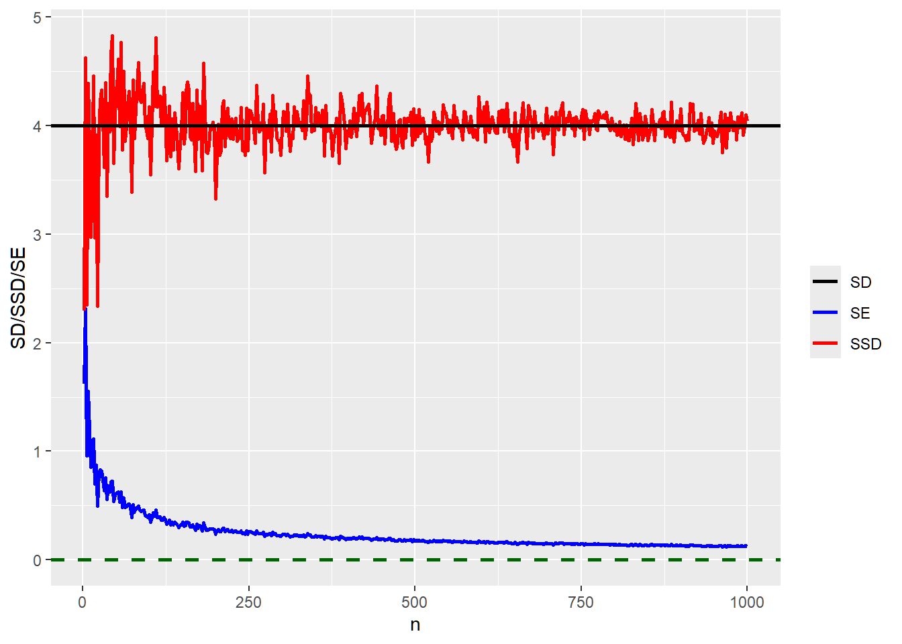

Introduction
Standard error, sample standard deviation and (population) standard deviation are not the same. Interestingly, confusion about standard error, standard deviation and sample standard deviation still exists. If you are in doubt, the next time you meet a friend ask, “What happens to the standard deviation as the sample size increases?”. While standard deviation and sample standard deviation may be used interchangeably, they are technically not the same. A more perfect distinction will be population standard deviation and sample standard deviation. The understanding inferred from a mere mention of “standard deviation” really depends on the context in which it is used.
Pardon me as I digress a little bit to lay some foundations. In an introductory statistics class, terms like population, parameter, sample are explained. Population describes a collection of all units of interest. A population is defined by a common feature. Suppose we are interested in the ages of college freshmen on a university campus, if we are able to record all the ages of the freshmen then that becomes our population with the common feature being “college freshmen on the campus”. Another important term is parameter, a numerical characteristic of a population. Realistically, it is expensive and time consuming to attempt to collect all information on a population. This leads us to the term “sample”. A sample describes a subset of a population. Using the college freshmen example, does taking the ages of only History majors constitute a sample? Here, we use sample to mean random sample. Random in the sense that every student has an equal chance of being included in the sample. I clarify that focusing only on History majors is not a random sample(see Tamhane & Dunlop, 2000). A random sample will be randomly selecting 1000 college freshmen on the college campus.
Let’s move away from the initial digression. I believe the second paragraph sets the tone for this article which is intended to highlight a distinction among (population) standard deviation, sample standard deviation and standard error of the sample mean under normality assumption.
Standard Deviation and Sample Standard Deviation
Standard deviation, \(\sigma\) and mean, \(\mu\) are some of the common population parameters with the following formulae:
\[\sigma = \sqrt{\frac{1}{N}\sum(x_{i} - \mu)^2}, \quad \mu = \frac{1}{N}\sum x_{i} \; ; \; \; \text{N denotes the population size}\] Standard deviation indicates the variability in a population. In Statistics, parameters are unknown(Do you see why?). Not knowing the parameters for any given population is not the end of the road. With a sample, we can estimate the population mean and standard deviation. Thus, sample mean, \(\bar{X}\) and sample standard deviation, \(\hat{\sigma}\) estimate the unknown mean and standard deviation of a population. It is common to refer to any of these estimates/estimators as a statistic. Can you think of any other statistic? \[\bar{X} = \frac{1}{n}\sum x_{i}\; \; , \;\quad \hat{\sigma} = \sqrt{\frac{1}{n - 1}\sum(x_{i} - \bar{x})^{2}} \;, \; \text{where n is the sample size}\] It is the case that different samples of the same size from the sample population give “different” results. This is known as sampling variability.
Let’s assume the ages of the freshmen come from a normally distributed population, \(N(\mu = 10, \; \sigma = 4)\). Under the assumption of known parameters, we take a random sample from the population as follows:
set.seed(1)
(sample1 <- rnorm(5, 10, 4))[1] 7.494185 10.734573 6.657486 16.381123 11.318031(sample2 <- rnorm(5, 10, 4))[1] 6.718126 11.949716 12.953299 12.303125 8.778446purrr::map_dbl(list(sample1, sample2), mean)[1] 10.51708 10.54054purrr::map_dbl(list(sample1, sample2), sd)[1] 3.844158 2.675337Clearly, these two samples are not the same. Coming from the same population, they have the same mean and standard deviation yet their sample means and sample standard deviations are different. This emphasizes the idea of sampling variability mentioned earlier.
Standard Errors
Due to the variability in the estimates, we need to figure out how to quantify the variations. Standard error is one way to do that. Standard error indicates the reliability of a statistic. It is easier to think of a standard error(SE) as the standard deviation of a statistic. Here, we demonstrate the distinction using the sample mean of a normal distribution. For a sample mean, SE is denoted as \[\sigma_{\bar{X}} = \frac{\sigma}{\sqrt{n}} = \frac{\hat{\sigma}}{\sqrt{n}}\] Do you recall why we need to replace \(\sigma\) with \(\hat{\sigma}\)?
The following R code helps demonstrate the differences.
set.seed(1)
#different sample sizes
n <- seq(2, 1000, by = 2)
#simulate from normal with different sample sizes
samples <- map(n, \(n) rnorm(n, 10, 4))
#sample sd for each sample
SSD <- map_dbl(samples, \(.x) sd(.x))
#SE of mean of each sample
SE <- map_dbl(samples, \(.x) sd(.x)/sqrt(length(.x)))
ggplot() +
geom_line(data = tibble(n, SE), aes(n, SE, color = "SE"), linewidth = .9) +
geom_line(data = tibble(n, SSD), aes(n, SSD, color = "SSD"), linewidth = .9
) +
geom_hline(aes(yintercept = 4, color = "SD"), linewidth = .9) +
geom_hline(yintercept = 0, linetype = 2, linewidth = .9, color = "darkgreen") +
scale_color_manual(name = "",
values = c("SE" = "blue","SSD" = "red","SD" = "black"))+
xlim(2, max(n)) +
labs(y = "SD/SSD/SE")
The standard deviation remains the same regardless of the sample size. The sample standard deviation is close to the standard deviation for a “large” sample size. Under normality assumption, standard error of the mean decreases as the sample size increases. Theoretically, standard error of the mean should be less than or equal to the standard deviation(When does the equality happen?). It is important to note that while a standard error of the mean continues to decrease, it is never zero. In fact, beyond a certain sample size, the rate of decrease is negligible.
Conclusion
In this article, we have seen that population standard deviation is a parameter describing the variation in a population. We use sample standard deviation to estimate the population standard deviation and as sample size increases, the sample standard deviation stabilizes around the population standard deviation . Next time you hear “standard deviation”, I hope you try to understand the context in which it is mentioned before thinking in terms of a population or a sample. For a normal population, the standard error of the sample mean is less than or equal to the standard deviation. As the sample size increases, the standard error of the mean decreases; indicating less variability in the statistic.
Bonus point: This distinction is applicable to distributions with finite mean and variance.
Reference
- Tamhane, A., & Dunlop, D. (2000). Statistics and data analysis: from elementary to intermediate.